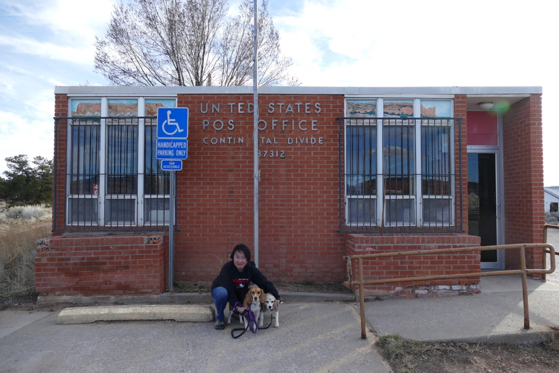

We stopped in the town of Continental Divide to find some indication of the actual Continental Divide. First we looked on the south side of I-40, where we didn't find a marker but did find the post office, probably not on the actual Divide.
Continental Divide Halley Beagle New Mexico Wallace Beagle